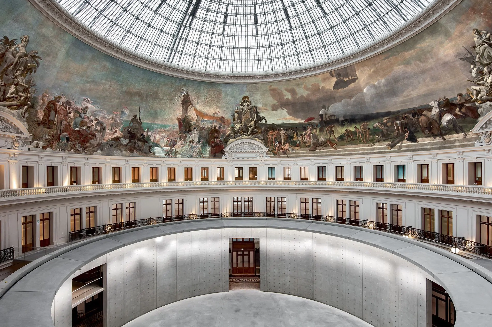

Bourse de
Commerce

2 rue de Viarmes,
75001 Paris
Un peu d'histoire...
Moyen-âge
XIXe siècle
2016
L’histoire de cet étonnant monument remonte au Moyen Âge. Il s’agit d’un hôtel particulier transmis en héritage à Saint Louis, qui voit plusieurs générations de Capétiens se succéder.
Dans le courant du XIXe, l’activité de la Halle au Blé décline et un nouvel incendie la ravage en 1854. Sa fermeture est décidée par la Chambre de Commerce de Paris qui choisit de la transformer en Bourse de Commerce en 1885.
En 2016, la Chambre de Commerce annonce son départ et cède le lieu à la Ville de Paris à François Pinault, homme d’affaires et grand collectionneur. Celui-ci entreprend de restaurer le bâtiment pour en faire un lieu dédié à l’art contemporain.
Les expositions
OPERA (QM.15), 2016
DOMINIQUE GONZALEZ-FOERSTER
jusqu’au 2 janvier 2023
« UNE SECONDE D'ÉTERNITÉ »
DOMINIQUE GONZALEZ-FOERSTER
jusqu’au 9 janvier 2023
« AT DUSK »
BORIS MIKHAÏLOV
jusqu’au 16 janvier 2023
« AVANT L'ORAGE »
Lucas Arruda
du 8 février au 11 sptembre 2023